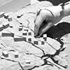
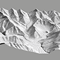
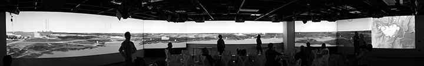
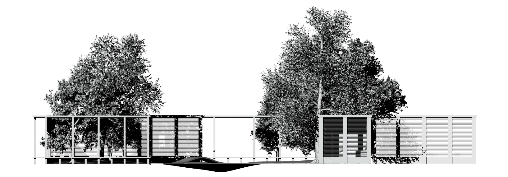

Courses
-

LAR 582.017 GIS for Designers
This course, GIS for Designers, aims to teach landscape architecture students how to use geographic information systems (GIS) as an integral part of the creative design process, rather than simply as an analytical tool. Students learn how to generate and develop the seed of a design in GIS as part of an iterative design process. They use conceptual and logical models to structure and generate designs, linking creative abstraction, computational exploration, structured decision-making, and expression. As part of an iterative design process students learn workflows linking 3D GIS, 3D modeling, and rapid prototyping - i.e., 3D printing, computer numeric controlled (CNC) fabrication, and laser cutting. Topics for this course include terrain modeling, hydrological modeling, map overlay analysis, trail routing using least cost paths, 3D visualization, and rapid prototyping. All topics are taught in both ArcGIS and GRASS GIS.
In a series of charrettes students plan and design a trail network for Lake Raleigh Woods, a landscape on NCSU's Centennial Campus, using GIS and 3D modeling. In the charrettes teams of students model environmental impacts and risks, identify potential trail routes, and then develop a series of trail scenarios. Each team designs scenarios for differing and potentially conflicting stakeholder objectives such as accessibility, aesthetics, and conservation. For each scenario they compute a trail network using map overlay analysis, iterative least cost path analysis, and network analysis using either ArcGIS, GRASS GIS, or the Tangible Landscape system which uses GRASS GIS in the background. For their final review, students present their designs to a jury in the Teaching and Visualization Lab in Hunt Library using blended projectors, stereoscopic 3D, and CNC routed models.
Syllabus
- Week 1: Data acquisition and cartography
Download data from the National Elevation Dataset.
- Week 2: Terrain visualization
Visualize terrain data in 2D, 2.5D, and 3D.
- Week 3: Terrain modeling
Derive digital elevation models, contours, slopes, aspect, hillshades, solar irradiation, and viewsheds from terrain data.
- Week 4: Hydrological modeling
Derive stream networks, watersheds, overland water flow, and flood risk from terrain data.
- Week 5: Geoprocessing
An introduction to conceptual modeling and visual programming.
- Week 6: Map overlay analysis I
Landscape planning with map algebra, map overlay analysis, and suitability analysis.
- Week 7: Map overlay analysis II
Landscape planning with map algebra, map overlay analysis, and suitability analysis.
- Week 8: Trail planning seminar
Use iterative least cost path analysis to plan a trail system.
- Week 9: Trail planning charrette
Work in teams to plan trail system scenarios for Lake Raleigh.
- Week 10: Rapid prototyping
Create a CNC routed terrain model for Lake Raleigh Woods in the Materials Lab.
- Week 11: 3D trail design charrette
Work in teams to design and grade a trail system for Lake Raleigh Woods at a finer scale.
- Week 12: Trail design charrette
Work in teams to design a trail system for Lake Raleigh Woods in greater detail.
- Week 13: Element design charrette
Work in teams to design elements and signage for a Lake Raleigh Woods’ trail system.
- Week 14: Pinup
Present your trail design to the class.
- Week 15: Final review
Present your trail design to a jury.
- Week 16: Lidar processing
Derive a digital elevation model from lidar data.
- Week 1: Data acquisition and cartography
-

LAR 582.008 3D Digital Design
In this course students will become fluent in surface and solid modeling and learn how to express themselves in 3D. They will learn how to quickly give form to an idea, sculpt abstract forms, shape complex 3D geometries, rapidly test ideas in an iterative design process, render visualizations, and manufacture prototypes. Students will learn how a) fluently express themselves in 3D, b) model and design across scales, c) understand the relationship between landscape, architectural, and industrial design, d) and translate generative concepts and metaphors into form, use rapid prototyping to fabricate conceptual design ideas. All topics are taught in Rhino3D.
Syllabus
- Week 1: Architecture
Explore the basic concepts of 3D modeling by crafting a house.
Topics: 3d drafting, surface modeling, solid modeling
- Week 2: Terrain
Model and sculpt a terrain.
Topics: NURBS modeling
- Week 3: Furniture
Model and render a piece of furniture.
Topics: NURBS modeling, solid modeling, rendering
- Week 4: Elements
Model and render landscape elements.
Topics: NURBS modeling, solid modeling, rendering
- Week 5: Sculpture
Model, render, and 3d print a sculpture.
Topics: NURBS modeling, rendering, 3d printing
- Week 6: Structure
Model and render structures embedded in the landscape.
Topics: NURBS modeling, solid modeling, rendering
- Week 7: Advanced terrain
Import GIS data, model a massive terrain as a mesh, and prepare the terrain model for rapid prototyping.
Topics: importing GIS data, mesh modeling, CNC, 3D printing
- Week 8: Plants
An introduction to 3d planting.
Topics: procedural vegetation modeling
- Week 9: Stones
A stone-arranging workshop. Model and arrange stones on paper, with physical models, with 3d models, and hybrid physical-digital models.
Topics: ideation, physical modeling, NURBS modeling, rendering, 3d printing, tangible geospatial modeling
- Week 10-12: Projects
Design a family of furniture, elements, and signage for the Lake Raleigh Woods trail. One-on-one help in desk critiques.
- Week 13: Final review
Present your trail design to a jury.
Location: Teaching and Visualization Lab, Hunt Library
- Week 14: Seminar
Discuss emerging digital designs paradigms and new technologies.
Topics: parametric modeling, procedural modeling, mass customization, fabrication
- Week 1: Architecture
-

LAR 582.xxx Modeling for Generative Design and Fabrication
In this course students will creatively use algorithms to generate designed form. Generative design - an iterative creative process of ideation, computational form generation, and critique - can be used to analyze and test alternative forms or build upon past forms. Students will explore such alternative computational modes of creativity and learn how to generate and build complex architectonic forms. In a series of charrettes they will design and fabricate an art installation.
Syllabus
- ...

Students presenting their design for a trail through Lake Raleigh Woods in Hunt Library using 270-degree blended projectors and stereoscopic 3D.
